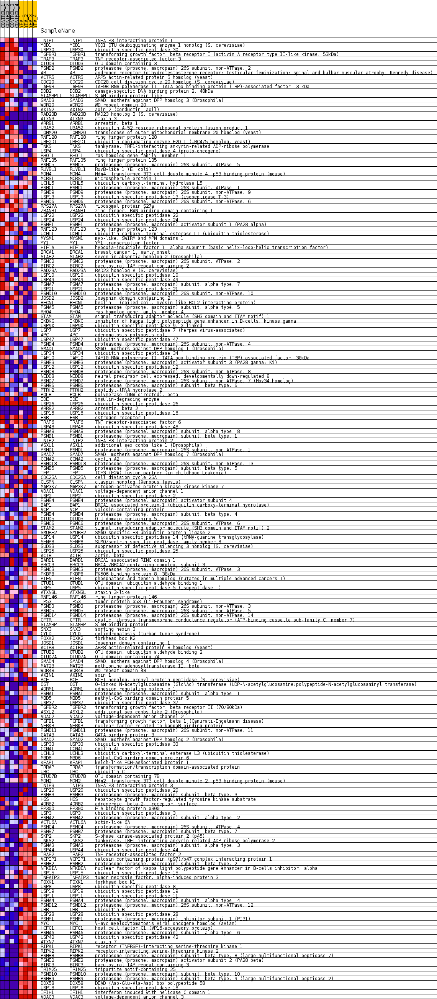
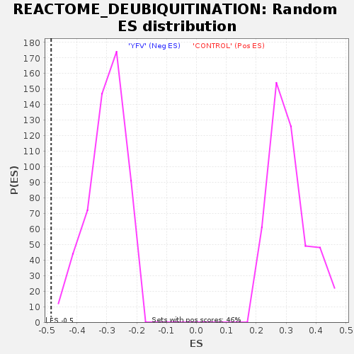

Profile of the Running ES Score & Positions of GeneSet Members on the Rank Ordered List
| Dataset | MATRIZ_GSE99081_collapsed_to_symbols.gsea_CLASE_99081.cls#CONTROL_versus_YFV |
| Phenotype | gsea_CLASE_99081.cls#CONTROL_versus_YFV |
| Upregulated in class | YFV |
| GeneSet | REACTOME_DEUBIQUITINATION |
| Enrichment Score (ES) | -0.48607484 |
| Normalized Enrichment Score (NES) | -1.6184005 |
| Nominal p-value | 0.0 |
| FDR q-value | 0.06590281 |
| FWER p-Value | 0.865 |
| SYMBOL | TITLE | RANK IN GENE LIST | RANK METRIC SCORE | RUNNING ES | CORE ENRICHMENT | |
|---|---|---|---|---|---|---|
| 1 | TNIP1 | TNFAIP3 interacting protein 1 | 7 | 2.016 | 0.0196 | No |
| 2 | YOD1 | YOD1 OTU deubiquinating enzyme 1 homolog (S. cerevisiae) | 107 | 1.260 | 0.0260 | No |
| 3 | USP30 | ubiquitin specific peptidase 30 | 162 | 1.136 | 0.0339 | No |
| 4 | TGFBR1 | transforming growth factor, beta receptor I (activin A receptor type II-like kinase, 53kDa) | 217 | 1.037 | 0.0408 | No |
| 5 | TRAF3 | TNF receptor-associated factor 3 | 336 | 0.924 | 0.0426 | No |
| 6 | OTUD3 | OTU domain containing 3 | 700 | 0.742 | 0.0274 | No |
| 7 | PSMD2 | proteasome (prosome, macropain) 26S subunit, non-ATPase, 2 | 711 | 0.738 | 0.0341 | No |
| 8 | AR | androgen receptor (dihydrotestosterone receptor; testicular feminization; spinal and bulbar muscular atrophy; Kennedy disease) | 813 | 0.699 | 0.0348 | No |
| 9 | ACTR5 | ARP5 actin-related protein 5 homolog (yeast) | 853 | 0.687 | 0.0392 | No |
| 10 | CDC20 | CDC20 cell division cycle 20 homolog (S. cerevisiae) | 891 | 0.677 | 0.0436 | No |
| 11 | TAF9B | TAF9B RNA polymerase II, TATA box binding protein (TBP)-associated factor, 31kDa | 973 | 0.650 | 0.0450 | No |
| 12 | DDB2 | damage-specific DNA binding protein 2, 48kDa | 1079 | 0.623 | 0.0446 | No |
| 13 | STAMBPL1 | STAM binding protein-like 1 | 1228 | 0.589 | 0.0413 | No |
| 14 | SMAD3 | SMAD, mothers against DPP homolog 3 (Drosophila) | 1317 | 0.569 | 0.0414 | No |
| 15 | WDR20 | WD repeat domain 20 | 1325 | 0.567 | 0.0466 | No |
| 16 | AXIN2 | axin 2 (conductin, axil) | 1436 | 0.543 | 0.0452 | No |
| 17 | RAD23B | RAD23 homolog B (S. cerevisiae) | 1683 | 0.500 | 0.0348 | No |
| 18 | ATXN3 | ataxin 3 | 1693 | 0.500 | 0.0392 | No |
| 19 | ARRB1 | arrestin, beta 1 | 1868 | 0.499 | 0.0333 | No |
| 20 | UBA52 | ubiquitin A-52 residue ribosomal protein fusion product 1 | 1969 | 0.488 | 0.0319 | No |
| 21 | TOMM20 | translocase of outer mitochondrial membrane 20 homolog (yeast) | 2002 | 0.483 | 0.0347 | No |
| 22 | RNF128 | ring finger protein 128 | 2103 | 0.468 | 0.0331 | No |
| 23 | UBE2D1 | ubiquitin-conjugating enzyme E2D 1 (UBC4/5 homolog, yeast) | 2350 | 0.433 | 0.0221 | No |
| 24 | TNKS | tankyrase, TRF1-interacting ankyrin-related ADP-ribose polymerase | 2461 | 0.418 | 0.0194 | No |
| 25 | USP4 | ubiquitin specific peptidase 4 (proto-oncogene) | 2640 | 0.392 | 0.0122 | No |
| 26 | RHOT1 | ras homolog gene family, member T1 | 2827 | 0.363 | 0.0042 | No |
| 27 | RNF135 | ring finger protein 135 | 3113 | 0.331 | -0.0103 | No |
| 28 | PSMC5 | proteasome (prosome, macropain) 26S subunit, ATPase, 5 | 3127 | 0.329 | -0.0078 | No |
| 29 | RUVBL1 | RuvB-like 1 (E. coli) | 3414 | 0.298 | -0.0227 | No |
| 30 | MDM4 | Mdm4, transformed 3T3 cell double minute 4, p53 binding protein (mouse) | 3483 | 0.291 | -0.0241 | No |
| 31 | MCRS1 | microspherule protein 1 | 3595 | 0.278 | -0.0282 | No |
| 32 | UCHL5 | ubiquitin carboxyl-terminal hydrolase L5 | 3672 | 0.269 | -0.0303 | No |
| 33 | PSMC1 | proteasome (prosome, macropain) 26S subunit, ATPase, 1 | 3697 | 0.267 | -0.0291 | No |
| 34 | PSMD9 | proteasome (prosome, macropain) 26S subunit, non-ATPase, 9 | 3732 | 0.263 | -0.0286 | No |
| 35 | USP13 | ubiquitin specific peptidase 13 (isopeptidase T-3) | 3965 | 0.245 | -0.0407 | No |
| 36 | PSMD6 | proteasome (prosome, macropain) 26S subunit, non-ATPase, 6 | 3986 | 0.243 | -0.0395 | No |
| 37 | RPS27A | ribosomal protein S27a | 4134 | 0.232 | -0.0464 | No |
| 38 | ZRANB1 | zinc finger, RAN-binding domain containing 1 | 4137 | 0.231 | -0.0442 | No |
| 39 | USP22 | ubiquitin specific peptidase 22 | 4200 | 0.227 | -0.0458 | No |
| 40 | USP24 | ubiquitin specific peptidase 24 | 4310 | 0.219 | -0.0504 | No |
| 41 | PSME1 | proteasome (prosome, macropain) activator subunit 1 (PA28 alpha) | 4391 | 0.212 | -0.0533 | No |
| 42 | RNF123 | ring finger protein 123 | 4445 | 0.207 | -0.0545 | No |
| 43 | UCHL1 | ubiquitin carboxyl-terminal esterase L1 (ubiquitin thiolesterase) | 4453 | 0.207 | -0.0529 | No |
| 44 | MYSM1 | myb-like, SWIRM and MPN domains 1 | 4559 | 0.196 | -0.0575 | No |
| 45 | YY1 | YY1 transcription factor | 4584 | 0.194 | -0.0571 | No |
| 46 | HIF1A | hypoxia-inducible factor 1, alpha subunit (basic helix-loop-helix transcription factor) | 4624 | 0.189 | -0.0576 | No |
| 47 | BRCA1 | breast cancer 1, early onset | 4709 | 0.182 | -0.0611 | No |
| 48 | SIAH2 | seven in absentia homolog 2 (Drosophila) | 4733 | 0.181 | -0.0607 | No |
| 49 | PSMC2 | proteasome (prosome, macropain) 26S subunit, ATPase, 2 | 4826 | 0.173 | -0.0647 | No |
| 50 | BIRC2 | baculoviral IAP repeat-containing 2 | 4955 | 0.163 | -0.0711 | No |
| 51 | RAD23A | RAD23 homolog A (S. cerevisiae) | 5017 | 0.157 | -0.0733 | No |
| 52 | USP10 | ubiquitin specific peptidase 10 | 5020 | 0.157 | -0.0719 | No |
| 53 | USP49 | ubiquitin specific peptidase 49 | 5117 | 0.147 | -0.0764 | No |
| 54 | PSMA7 | proteasome (prosome, macropain) subunit, alpha type, 7 | 5238 | 0.134 | -0.0826 | No |
| 55 | USP21 | ubiquitin specific peptidase 21 | 5314 | 0.129 | -0.0860 | No |
| 56 | PSMD10 | proteasome (prosome, macropain) 26S subunit, non-ATPase, 10 | 5332 | 0.127 | -0.0858 | No |
| 57 | JOSD2 | Josephin domain containing 2 | 5407 | 0.121 | -0.0892 | No |
| 58 | BECN1 | beclin 1 (coiled-coil, myosin-like BCL2 interacting protein) | 5658 | 0.102 | -0.1038 | No |
| 59 | PSMA5 | proteasome (prosome, macropain) subunit, alpha type, 5 | 5659 | 0.102 | -0.1028 | No |
| 60 | RHOA | ras homolog gene family, member A | 5701 | 0.098 | -0.1043 | No |
| 61 | STAM | signal transducing adaptor molecule (SH3 domain and ITAM motif) 1 | 5812 | 0.090 | -0.1103 | No |
| 62 | IKBKG | inhibitor of kappa light polypeptide gene enhancer in B-cells, kinase gamma | 5852 | 0.088 | -0.1119 | No |
| 63 | USP9X | ubiquitin specific peptidase 9, X-linked | 5874 | 0.086 | -0.1123 | No |
| 64 | USP7 | ubiquitin specific peptidase 7 (herpes virus-associated) | 5882 | 0.086 | -0.1119 | No |
| 65 | APC | adenomatosis polyposis coli | 5964 | 0.079 | -0.1162 | No |
| 66 | USP47 | ubiquitin specific peptidase 47 | 5978 | 0.078 | -0.1162 | No |
| 67 | PSMD4 | proteasome (prosome, macropain) 26S subunit, non-ATPase, 4 | 6348 | 0.049 | -0.1387 | No |
| 68 | SMAD1 | SMAD, mothers against DPP homolog 1 (Drosophila) | 6363 | 0.048 | -0.1391 | No |
| 69 | USP34 | ubiquitin specific peptidase 34 | 6402 | 0.045 | -0.1411 | No |
| 70 | TAF10 | TAF10 RNA polymerase II, TATA box binding protein (TBP)-associated factor, 30kDa | 6531 | 0.036 | -0.1487 | No |
| 71 | PSME3 | proteasome (prosome, macropain) activator subunit 3 (PA28 gamma; Ki) | 6661 | 0.029 | -0.1564 | No |
| 72 | USP12 | ubiquitin specific peptidase 12 | 6698 | 0.026 | -0.1584 | No |
| 73 | PSMD8 | proteasome (prosome, macropain) 26S subunit, non-ATPase, 8 | 6710 | 0.026 | -0.1589 | No |
| 74 | NEDD8 | neural precursor cell expressed, developmentally down-regulated 8 | 6713 | 0.025 | -0.1587 | No |
| 75 | PSMD7 | proteasome (prosome, macropain) 26S subunit, non-ATPase, 7 (Mov34 homolog) | 6854 | 0.018 | -0.1673 | No |
| 76 | PSMB6 | proteasome (prosome, macropain) subunit, beta type, 6 | 7048 | 0.008 | -0.1792 | No |
| 77 | PTRH2 | peptidyl-tRNA hydrolase 2 | 7066 | 0.007 | -0.1802 | No |
| 78 | POLB | polymerase (DNA directed), beta | 7121 | 0.004 | -0.1836 | No |
| 79 | IDE | insulin-degrading enzyme | 7185 | 0.001 | -0.1875 | No |
| 80 | USP26 | ubiquitin specific peptidase 26 | 8269 | 0.000 | -0.2550 | No |
| 81 | ARRB2 | arrestin, beta 2 | 9362 | -0.000 | -0.3232 | No |
| 82 | USP16 | ubiquitin specific peptidase 16 | 9453 | -0.000 | -0.3288 | No |
| 83 | ESR1 | estrogen receptor 1 | 9481 | -0.001 | -0.3304 | No |
| 84 | TRAF6 | TNF receptor-associated factor 6 | 9581 | -0.007 | -0.3366 | No |
| 85 | USP48 | ubiquitin specific peptidase 48 | 9582 | -0.007 | -0.3365 | No |
| 86 | PSMA8 | proteasome (prosome, macropain) subunit, alpha type, 8 | 9584 | -0.007 | -0.3365 | No |
| 87 | PSMB1 | proteasome (prosome, macropain) subunit, beta type, 1 | 9745 | -0.014 | -0.3463 | No |
| 88 | TNIP2 | TNFAIP3 interacting protein 2 | 9931 | -0.022 | -0.3576 | No |
| 89 | ASXL1 | additional sex combs like 1 (Drosophila) | 9983 | -0.024 | -0.3606 | No |
| 90 | PSMD1 | proteasome (prosome, macropain) 26S subunit, non-ATPase, 1 | 10102 | -0.030 | -0.3676 | No |
| 91 | SMAD7 | SMAD, mothers against DPP homolog 7 (Drosophila) | 10205 | -0.038 | -0.3736 | No |
| 92 | CCNA2 | cyclin A2 | 10224 | -0.039 | -0.3744 | No |
| 93 | PSMD13 | proteasome (prosome, macropain) 26S subunit, non-ATPase, 13 | 10422 | -0.053 | -0.3861 | No |
| 94 | PSMB5 | proteasome (prosome, macropain) subunit, beta type, 5 | 10473 | -0.058 | -0.3887 | No |
| 95 | TFPT | TCF3 (E2A) fusion partner (in childhood Leukemia) | 10512 | -0.061 | -0.3904 | No |
| 96 | CDC25A | cell division cycle 25A | 10529 | -0.062 | -0.3908 | No |
| 97 | CLSPN | claspin homolog (Xenopus laevis) | 10611 | -0.068 | -0.3952 | No |
| 98 | MAP3K7 | mitogen-activated protein kinase kinase kinase 7 | 10616 | -0.068 | -0.3948 | No |
| 99 | VDAC1 | voltage-dependent anion channel 1 | 10627 | -0.069 | -0.3947 | No |
| 100 | USP2 | ubiquitin specific peptidase 2 | 10677 | -0.073 | -0.3970 | No |
| 101 | PSME4 | proteasome (prosome, macropain) activator subunit 4 | 10799 | -0.085 | -0.4037 | No |
| 102 | BAP1 | BRCA1 associated protein-1 (ubiquitin carboxy-terminal hydrolase) | 10823 | -0.087 | -0.4043 | No |
| 103 | VCP | valosin-containing protein | 10836 | -0.088 | -0.4042 | No |
| 104 | PSMB4 | proteasome (prosome, macropain) subunit, beta type, 4 | 10839 | -0.088 | -0.4034 | No |
| 105 | OTUD5 | OTU domain containing 5 | 10908 | -0.095 | -0.4067 | No |
| 106 | PSMC6 | proteasome (prosome, macropain) 26S subunit, ATPase, 6 | 11010 | -0.102 | -0.4120 | No |
| 107 | STAM2 | signal transducing adaptor molecule (SH3 domain and ITAM motif) 2 | 11137 | -0.114 | -0.4187 | No |
| 108 | SMURF2 | SMAD specific E3 ubiquitin protein ligase 2 | 11276 | -0.127 | -0.4261 | No |
| 109 | USP14 | ubiquitin specific peptidase 14 (tRNA-guanine transglycosylase) | 11327 | -0.131 | -0.4279 | No |
| 110 | SENP8 | SUMO/sentrin specific peptidase family member 8 | 11359 | -0.135 | -0.4285 | No |
| 111 | SUDS3 | suppressor of defective silencing 3 homolog (S. cerevisiae) | 11375 | -0.136 | -0.4281 | No |
| 112 | USP25 | ubiquitin specific peptidase 25 | 11399 | -0.139 | -0.4281 | No |
| 113 | ACTB | actin, beta | 11418 | -0.141 | -0.4279 | No |
| 114 | BARD1 | BRCA1 associated RING domain 1 | 11461 | -0.145 | -0.4290 | No |
| 115 | BRCC3 | BRCA1/BRCA2-containing complex, subunit 3 | 11492 | -0.147 | -0.4294 | No |
| 116 | PSMC3 | proteasome (prosome, macropain) 26S subunit, ATPase, 3 | 11528 | -0.149 | -0.4301 | No |
| 117 | FKBP8 | FK506 binding protein 8, 38kDa | 11530 | -0.149 | -0.4287 | No |
| 118 | PTEN | phosphatase and tensin homolog (mutated in multiple advanced cancers 1) | 11565 | -0.152 | -0.4293 | No |
| 119 | OTUB1 | OTU domain, ubiquitin aldehyde binding 1 | 11568 | -0.152 | -0.4280 | No |
| 120 | USP5 | ubiquitin specific peptidase 5 (isopeptidase T) | 11593 | -0.155 | -0.4279 | No |
| 121 | ATXN3L | ataxin 3-like | 11716 | -0.165 | -0.4339 | No |
| 122 | RNF146 | ring finger protein 146 | 11752 | -0.169 | -0.4344 | No |
| 123 | TP53 | tumor protein p53 (Li-Fraumeni syndrome) | 11764 | -0.171 | -0.4334 | No |
| 124 | PSMD3 | proteasome (prosome, macropain) 26S subunit, non-ATPase, 3 | 11846 | -0.178 | -0.4366 | No |
| 125 | PSMD5 | proteasome (prosome, macropain) 26S subunit, non-ATPase, 5 | 11911 | -0.185 | -0.4388 | No |
| 126 | PSMD14 | proteasome (prosome, macropain) 26S subunit, non-ATPase, 14 | 11924 | -0.186 | -0.4377 | No |
| 127 | CFTR | cystic fibrosis transmembrane conductance regulator (ATP-binding cassette sub-family C, member 7) | 11929 | -0.186 | -0.4361 | No |
| 128 | STAMBP | STAM binding protein | 12060 | -0.198 | -0.4422 | No |
| 129 | SNX3 | sorting nexin 3 | 12071 | -0.200 | -0.4409 | No |
| 130 | CYLD | cylindromatosis (turban tumor syndrome) | 12073 | -0.200 | -0.4390 | No |
| 131 | FOXK2 | forkhead box K2 | 12200 | -0.214 | -0.4447 | No |
| 132 | JOSD1 | Josephin domain containing 1 | 12267 | -0.221 | -0.4466 | No |
| 133 | ACTR8 | ARP8 actin-related protein 8 homolog (yeast) | 12289 | -0.223 | -0.4457 | No |
| 134 | OTUB2 | OTU domain, ubiquitin aldehyde binding 2 | 12305 | -0.225 | -0.4444 | No |
| 135 | OTUD7A | OTU domain containing 7A | 12459 | -0.239 | -0.4516 | No |
| 136 | SMAD4 | SMAD, mothers against DPP homolog 4 (Drosophila) | 12525 | -0.248 | -0.4532 | No |
| 137 | MAT2B | methionine adenosyltransferase II, beta | 12602 | -0.254 | -0.4554 | No |
| 138 | WDR48 | WD repeat domain 48 | 12720 | -0.266 | -0.4600 | No |
| 139 | AXIN1 | axin 1 | 12774 | -0.274 | -0.4606 | No |
| 140 | RCE1 | RCE1 homolog, prenyl protein peptidase (S. cerevisiae) | 12793 | -0.276 | -0.4590 | No |
| 141 | OGT | O-linked N-acetylglucosamine (GlcNAc) transferase (UDP-N-acetylglucosamine:polypeptide-N-acetylglucosaminyl transferase) | 12795 | -0.276 | -0.4563 | No |
| 142 | ADRM1 | adhesion regulating molecule 1 | 12860 | -0.283 | -0.4575 | No |
| 143 | PSMA1 | proteasome (prosome, macropain) subunit, alpha type, 1 | 12891 | -0.287 | -0.4565 | No |
| 144 | MBD5 | methyl-CpG binding domain protein 5 | 12897 | -0.288 | -0.4540 | No |
| 145 | USP37 | ubiquitin specific peptidase 37 | 12944 | -0.293 | -0.4539 | No |
| 146 | TGFBR2 | transforming growth factor, beta receptor II (70/80kDa) | 12995 | -0.300 | -0.4541 | No |
| 147 | ASXL2 | additional sex combs like 2 (Drosophila) | 13042 | -0.306 | -0.4539 | No |
| 148 | VDAC2 | voltage-dependent anion channel 2 | 13387 | -0.349 | -0.4719 | No |
| 149 | TGFB1 | transforming growth factor, beta 1 (Camurati-Engelmann disease) | 13444 | -0.357 | -0.4718 | No |
| 150 | NFRKB | nuclear factor related to kappaB binding protein | 13450 | -0.358 | -0.4686 | No |
| 151 | PSMD11 | proteasome (prosome, macropain) 26S subunit, non-ATPase, 11 | 13564 | -0.374 | -0.4719 | No |
| 152 | GATA3 | GATA binding protein 3 | 13646 | -0.386 | -0.4731 | No |
| 153 | SMAD2 | SMAD, mothers against DPP homolog 2 (Drosophila) | 13855 | -0.418 | -0.4819 | Yes |
| 154 | USP33 | ubiquitin specific peptidase 33 | 13864 | -0.420 | -0.4782 | Yes |
| 155 | CCNA1 | cyclin A1 | 13876 | -0.422 | -0.4747 | Yes |
| 156 | UCHL3 | ubiquitin carboxyl-terminal esterase L3 (ubiquitin thiolesterase) | 13914 | -0.426 | -0.4728 | Yes |
| 157 | MBD6 | methyl-CpG binding domain protein 6 | 14012 | -0.443 | -0.4745 | Yes |
| 158 | KEAP1 | kelch-like ECH-associated protein 1 | 14068 | -0.454 | -0.4734 | Yes |
| 159 | TRRAP | transformation/transcription domain-associated protein | 14124 | -0.467 | -0.4722 | Yes |
| 160 | UBC | ubiquitin C | 14182 | -0.479 | -0.4710 | Yes |
| 161 | OTUD7B | OTU domain containing 7B | 14191 | -0.481 | -0.4667 | Yes |
| 162 | MDM2 | Mdm2, transformed 3T3 cell double minute 2, p53 binding protein (mouse) | 14302 | -0.498 | -0.4686 | Yes |
| 163 | TNIP3 | TNFAIP3 interacting protein 3 | 14303 | -0.499 | -0.4636 | Yes |
| 164 | USP20 | ubiquitin specific peptidase 20 | 14432 | -0.500 | -0.4666 | Yes |
| 165 | PSMB3 | proteasome (prosome, macropain) subunit, beta type, 3 | 14438 | -0.500 | -0.4620 | Yes |
| 166 | HGS | hepatocyte growth factor-regulated tyrosine kinase substrate | 14569 | -0.510 | -0.4650 | Yes |
| 167 | ADRB2 | adrenergic, beta-2-, receptor, surface | 14586 | -0.513 | -0.4609 | Yes |
| 168 | EP300 | E1A binding protein p300 | 14599 | -0.516 | -0.4565 | Yes |
| 169 | USP3 | ubiquitin specific peptidase 3 | 14671 | -0.535 | -0.4556 | Yes |
| 170 | PSMA2 | proteasome (prosome, macropain) subunit, alpha type, 2 | 14672 | -0.535 | -0.4503 | Yes |
| 171 | ACTL6A | actin-like 6A | 14762 | -0.556 | -0.4504 | Yes |
| 172 | PSMC4 | proteasome (prosome, macropain) 26S subunit, ATPase, 4 | 14766 | -0.557 | -0.4450 | Yes |
| 173 | PSMB7 | proteasome (prosome, macropain) subunit, beta type, 7 | 14794 | -0.565 | -0.4411 | Yes |
| 174 | SKP2 | S-phase kinase-associated protein 2 (p45) | 14868 | -0.584 | -0.4398 | Yes |
| 175 | TNKS2 | tankyrase, TRF1-interacting ankyrin-related ADP-ribose polymerase 2 | 14922 | -0.598 | -0.4372 | Yes |
| 176 | PSMA3 | proteasome (prosome, macropain) subunit, alpha type, 3 | 14958 | -0.609 | -0.4333 | Yes |
| 177 | USP44 | ubiquitin specific peptidase 44 | 15062 | -0.643 | -0.4333 | Yes |
| 178 | TRAF2 | TNF receptor-associated factor 2 | 15093 | -0.651 | -0.4287 | Yes |
| 179 | VCPIP1 | valosin containing protein (p97)/p47 complex interacting protein 1 | 15108 | -0.656 | -0.4231 | Yes |
| 180 | PSMB2 | proteasome (prosome, macropain) subunit, beta type, 2 | 15120 | -0.662 | -0.4172 | Yes |
| 181 | NFKBIA | nuclear factor of kappa light polypeptide gene enhancer in B-cells inhibitor, alpha | 15212 | -0.696 | -0.4160 | Yes |
| 182 | USP15 | ubiquitin specific peptidase 15 | 15236 | -0.703 | -0.4104 | Yes |
| 183 | TNFAIP3 | tumor necrosis factor, alpha-induced protein 3 | 15252 | -0.711 | -0.4043 | Yes |
| 184 | FOXK1 | forkhead box K1 | 15276 | -0.727 | -0.3985 | Yes |
| 185 | USP8 | ubiquitin specific peptidase 8 | 15280 | -0.727 | -0.3914 | Yes |
| 186 | USP19 | ubiquitin specific peptidase 19 | 15308 | -0.747 | -0.3857 | Yes |
| 187 | USP11 | ubiquitin specific peptidase 11 | 15348 | -0.763 | -0.3805 | Yes |
| 188 | PSMA4 | proteasome (prosome, macropain) subunit, alpha type, 4 | 15508 | -0.833 | -0.3822 | Yes |
| 189 | PSMD12 | proteasome (prosome, macropain) 26S subunit, non-ATPase, 12 | 15525 | -0.844 | -0.3748 | Yes |
| 190 | UBB | ubiquitin B | 15642 | -0.918 | -0.3729 | Yes |
| 191 | USP28 | ubiquitin specific peptidase 28 | 15680 | -0.952 | -0.3657 | Yes |
| 192 | PSMF1 | proteasome (prosome, macropain) inhibitor subunit 1 (PI31) | 15701 | -0.986 | -0.3572 | Yes |
| 193 | MYC | v-myc myelocytomatosis viral oncogene homolog (avian) | 15733 | -1.017 | -0.3490 | Yes |
| 194 | HCFC1 | host cell factor C1 (VP16-accessory protein) | 15748 | -1.035 | -0.3396 | Yes |
| 195 | PSMA6 | proteasome (prosome, macropain) subunit, alpha type, 6 | 15762 | -1.053 | -0.3299 | Yes |
| 196 | USP42 | ubiquitin specific peptidase 42 | 15808 | -1.137 | -0.3214 | Yes |
| 197 | ATXN7 | ataxin 7 | 15843 | -1.203 | -0.3116 | Yes |
| 198 | RIPK1 | receptor (TNFRSF)-interacting serine-threonine kinase 1 | 15848 | -1.206 | -0.2999 | Yes |
| 199 | RIPK2 | receptor-interacting serine-threonine kinase 2 | 15960 | -1.440 | -0.2925 | Yes |
| 200 | PSMB8 | proteasome (prosome, macropain) subunit, beta type, 8 (large multifunctional peptidase 7) | 16014 | -1.655 | -0.2793 | Yes |
| 201 | PSME2 | proteasome (prosome, macropain) activator subunit 2 (PA28 beta) | 16061 | -1.905 | -0.2633 | Yes |
| 202 | BIRC3 | baculoviral IAP repeat-containing 3 | 16076 | -1.975 | -0.2445 | Yes |
| 203 | TRIM25 | tripartite motif-containing 25 | 16114 | -2.360 | -0.2233 | Yes |
| 204 | PSMB10 | proteasome (prosome, macropain) subunit, beta type, 10 | 16150 | -2.694 | -0.1987 | Yes |
| 205 | PSMB9 | proteasome (prosome, macropain) subunit, beta type, 9 (large multifunctional peptidase 2) | 16195 | -3.614 | -0.1656 | Yes |
| 206 | DDX58 | DEAD (Asp-Glu-Ala-Asp) box polypeptide 58 | 16212 | -4.043 | -0.1264 | Yes |
| 207 | USP18 | ubiquitin specific peptidase 18 | 16216 | -4.180 | -0.0850 | Yes |
| 208 | IFIH1 | interferon induced with helicase C domain 1 | 16219 | -4.231 | -0.0431 | Yes |
| 209 | VDAC3 | voltage-dependent anion channel 3 | 16224 | -4.452 | 0.0009 | Yes |

